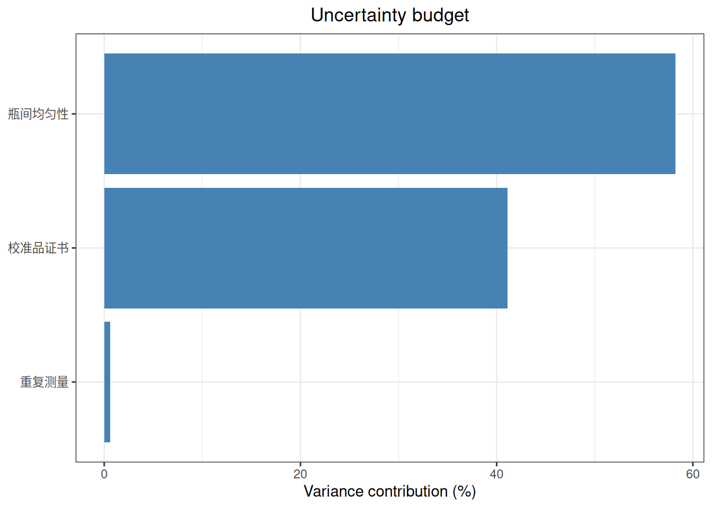
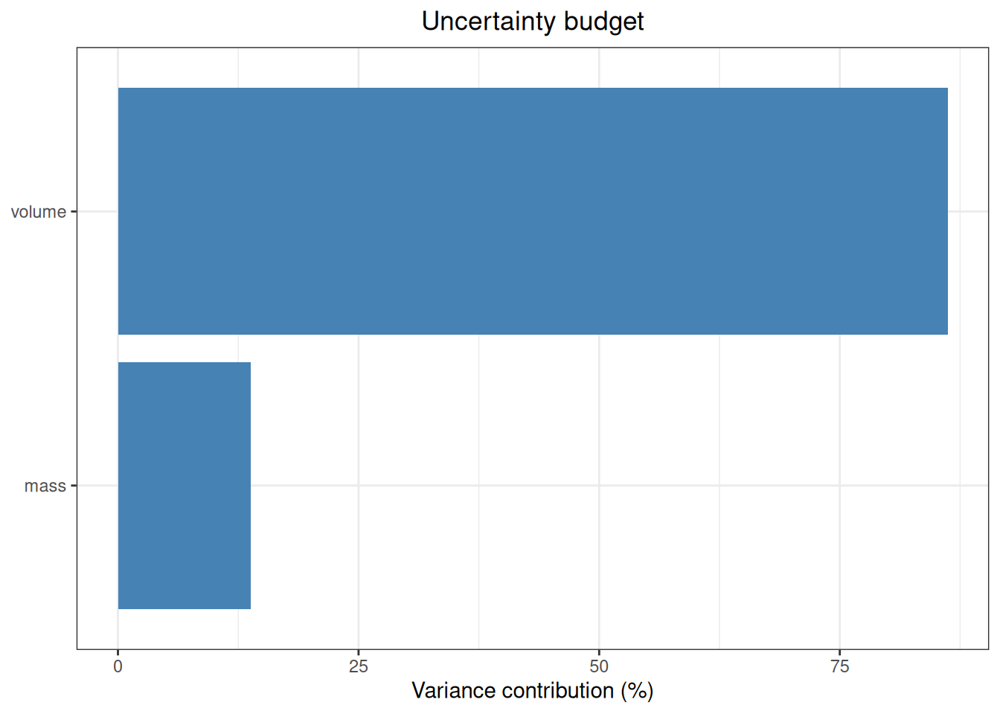
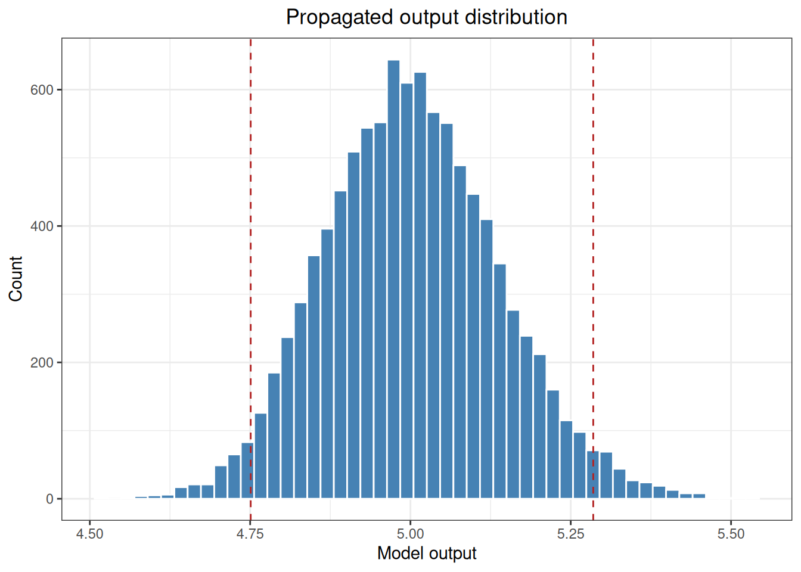
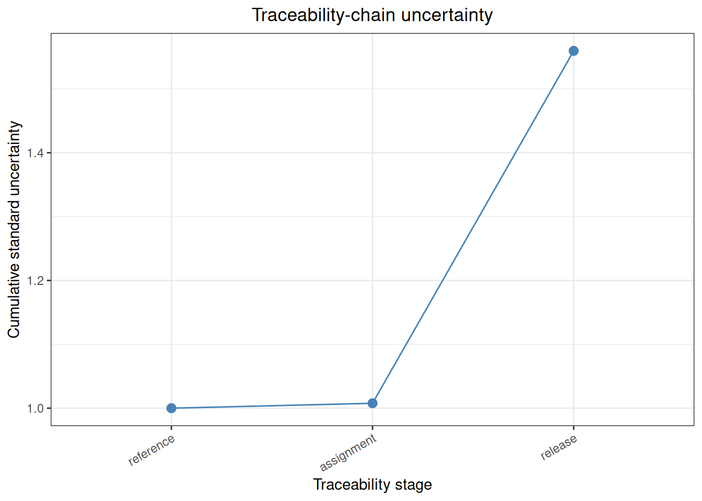

%%{init: {"theme":"base","themeVariables":{"primaryColor":"#EAF2FB","primaryBorderColor":"#2780E3","primaryTextColor":"#212529","lineColor":"#6C757D","secondaryColor":"#EAF7E6","tertiaryColor":"#FFF4E8","fontSize":"13px"},"flowchart":{"nodeSpacing":18,"rankSpacing":24,"padding":6}}}%%
flowchart LR
A["Replicates, certificates, IQC<br/>homogeneity, stability, characterization"]
B["uncertainty_*() functions<br/>convert inputs to standard-uncertainty components"]
C["uncertainty_combine()<br/>single-node budget"]
D["uncertainty_propagate()<br/>measurement-model propagation"]
E["uncertainty_traceability()<br/>staged traceability budget"]
A --> B
B --> C
B --> D --> C
C --> E
classDef source fill:#EAF2FB,stroke:#2780E3,color:#212529
classDef function fill:#EAF7E6,stroke:#3FB618,color:#212529
classDef result fill:#F4EEFB,stroke:#9954BB,color:#212529
class A source
class B,C,D function
class E result
5 Measurement Uncertainty Analysis
This chapter demonstrates how to define measurement-uncertainty components, propagate a measurement model, combine an uncertainty budget, and aggregate results along a metrological traceability chain. It covers Type A and Type B evaluations, long-term IQC, between-bottle homogeneity, stability, multi-laboratory characterization, and single-node and staged budgets.
ImportantScope of Use
The ordinary data and standard-case data in this chapter are provided only to verify the analysis workflow. The uncertainty_* functions calculate standard, combined, and expanded uncertainty; they do not replace measurand definition, experimental design, clinical acceptance criteria, regulatory assessment, or product-release decisions. Formal reports must state the measurand, unit, whether the result is a single value or a mean, the source/distribution/degrees of freedom of each component, the coverage factor, and the correlation assumptions.
The numerical values in the standard cases follow the cited standard text. Each case compares ivdtools results with the corresponding standard result. Differences caused by intermediate rounding, statistical definitions, or approximation methods are explained separately after the comparison table.
Measurement-uncertainty analysis first defines the output quantity and measurement model, then converts information from different sources into standard-uncertainty components:
Code
library(ivdtools)
library(readr)5.1 Main Functions
| Function | Main purpose |
|---|---|
uncertainty_type_a() |
Estimate a Type A component from replicate measurements |
uncertainty_type_b() |
Estimate a Type B component from certificates, limits, or distributions |
uncertainty_iqc() |
Extract within-run, between-run, and combined components from long-term IQC |
uncertainty_homogeneity() |
Evaluate between-bottle or between-unit homogeneity |
uncertainty_stability() |
Estimate a shelf-life stability component from a time trend |
uncertainty_characterization() |
Estimate an assigned-value component from multi-laboratory results |
uncertainty_combine() |
Combine an uncertainty budget for one result node |
uncertainty_propagate() |
Propagate uncertainty through division, multiplication, or another model |
uncertainty_traceability() |
Accumulate newly introduced components along traceability stages |
5.1.1 Type A Components from Replicate Measurements: uncertainty_type_a()
quantity = "single" uses the sample standard deviation of replicate results to describe a future single result; quantity = "mean" uses the standard error to describe the mean of the replicate set. These correspond to different reported quantities.
Code
repeatability <- uncertainty_type_a(
c(99.5, 100.2, 100.0, 99.8, 100.1),
name = "重复测量",
quantity = "mean",
relative = TRUE
)
repeatability
Uncertainty component
Name : 重复测量
Estimate : 99.92
Standard uncertainty : 0.0012419609
Relative uncertainty : 0.0012419609
Degrees of freedom : 4
Evaluation type : A
Distribution : normal
Source : replicate measurements: mean
Relative : TRUEThe returned object includes the estimate, standard uncertainty, relative standard uncertainty, degrees of freedom, evaluation type, distribution, and source. Non-finite values are removed, but formal analyses must retain the raw data and exclusion record.
5.1.2 Type B Components from Certificates or Specifications: uncertainty_type_b()
When a certificate gives expanded uncertainty directly, provide the corresponding certificate coverage factor \(k\). When only limits are available, select the distribution using the certificate, specification, or scientific rationale.
Code
certificate <- uncertainty_type_b(
name = "校准品证书",
estimate = 100,
uncertainty = 2,
distribution = "normal",
k = 2,
relative = TRUE
)
pipette <- uncertainty_type_b(
name = "移液器容量",
estimate = 10,
lower = 9.9,
upper = 10.1,
distribution = "rectangular"
)
certificate
Uncertainty component
Name : 校准品证书
Estimate : 100
Standard uncertainty : 0.01
Relative uncertainty : 0.01
Degrees of freedom : Inf
Evaluation type : B
Distribution : normal
Source : expanded uncertainty
Relative : TRUECode
pipette
Uncertainty component
Name : 移液器容量
Estimate : 10
Standard uncertainty : 0.057735027
Relative uncertainty : 0.0057735027
Degrees of freedom : Inf
Evaluation type : B
Distribution : rectangular
Source : interval limits
Relative : FALSEFor interval distributions, the standard uncertainty depends on the half-width and the assumed distribution. Normal or Student-\(t\) intervals also require an explicit coverage probability and degrees of freedom.
5.1.3 Long-Term IQC Components: uncertainty_iqc()
When runs and within-run replicates are available, the function uses one-way random-effects ANOVA to separate within-run and between-run variation. If there is no run column, or each run has only one result, it uses the dispersion of the long-term results directly.
Code
iqc_data <- data.frame(
run = rep(1:5, each = 2),
result = c(99, 101, 100, 102, 98, 100, 101, 103, 99, 100)
)
iqc_component <- uncertainty_iqc(
iqc_data,
result = "result",
run = "run",
quantity = "single",
name = "长期 IQC",
relative = TRUE
)
iqc_component
IQC uncertainty
Method : one-way ANOVA
Observations : 10
Runs : 5
Within-run SD : 1.3038405
Between-run SD : 0.77459667
Single-result uncertainty : 1.5165751
Mean uncertainty : 0.53851648The IQC level should represent the concentration of the reported result. Whether out-of-control periods are excluded must be determined by a prespecified quality procedure. If IQC already contains a calibration or between-lot source, do not add the same source again as an independent component.
5.1.4 Between-Bottle Homogeneity: uncertainty_homogeneity()
The data should be in long format, with multiple replicate measurements per packaging unit in the usual design. The function returns mean squares, repeatability SD, the observed between-unit SD, implied heterogeneity, and the final \(u_{bb}\).
Code
homogeneity_data <- data.frame(
bottle = rep(paste0("B", 1:4), each = 2),
result = c(99, 100, 101, 100, 98, 99, 102, 101)
)
homogeneity_component <- uncertainty_homogeneity(
homogeneity_data,
unit = "bottle",
result = "result",
name = "瓶间均匀性",
relative = TRUE
)
homogeneity_component
Between-unit homogeneity uncertainty
Units : 4
Results : 8
Mean : 100
Effective degrees of freedom : 2
Average replicates : 2
Within-unit mean square : 0.5
Between-unit mean square : 3.3333333
Within-unit degrees of freedom : 4
Between-unit degrees of freedom : 3
Repeatability SD : 0.70710678
Between-unit SD : 1.1902381
Hidden inhomogeneity : 0.42044821
Between-unit uncertainty : 1.1902381
Relative repeatability : 0.0070710678
Relative between-unit : 0.011902381
Relative hidden inhomogeneity : 0.0042044821
Relative between-unit uncertainty : 0.011902381The homogeneity result also depends on sampling, measurement order, and minimum sample size. The function does not automatically prove that the sampling plan represents the entire lot.
5.1.5 Stability-Trend Components: uncertainty_stability()
The function fits
\[result = intercept + slope \times time\]
The trend uncertainty over the target shelf life is the slope standard error multiplied by shelf life. shelf_life and time must use the same time unit.
Code
stability_data <- data.frame(
time = rep(0:4, each = 2),
result = c(100.1, 99.9, 100.0, 99.8, 99.7,
99.9, 99.6, 99.8, 99.5, 99.7)
)
stability_component <- uncertainty_stability(
stability_data,
time = "time",
result = "result",
shelf_life = 6,
name = "6个月长期稳定性",
relative = TRUE
)
stability_component
Stability uncertainty
Condition : all
Observations : 10
Minimum time : 0
Maximum time : 4
Shelf life : 6
Intercept : 100
Slope : -0.1
Mean : 99.8
Slope SE : 0.025
Residual SD : 0.1118034
Degrees of freedom : 8
Long-term uncertainty : 0.15
Relative long-term uncertainty : 0.001503006Extrapolation far beyond the observed range requires separate justification. Multiple storage conditions often represent different scenarios; do not add components from all conditions together without deciding how they relate to the reported result.
5.1.6 Multi-Laboratory Characterization: uncertainty_characterization()
The function first calculates the mean for each laboratory and then combines laboratory means with equal weight. A laboratory with more replicates does not automatically receive more weight.
Code
characterization_data <- data.frame(
laboratory = rep(paste0("Lab", 1:4), each = 3),
result = c(
99, 100, 101,
100, 101, 100,
98, 99, 100,
101, 102, 101
)
)
characterization_component <- uncertainty_characterization(
characterization_data,
laboratory = "laboratory",
result = "result",
name = "多实验室定值",
relative = TRUE
)
characterization_component
Characterization uncertainty
laboratories : 4
assigned_value : 100.16667
laboratory_sd : 0.96225045
standard_uncertainty : 0.481125225.1.7 Single-Node Combination: uncertainty_combine()
uncertainty_combine() is appropriate when components are already expressed on the same output scale. sensitivity supplies the local effect of an input change on the output; correlation supplies the correlation matrix of the inputs. The default is an identity matrix, which assumes independent components.
Code
budget <- uncertainty_combine(
repeatability,
certificate,
homogeneity_component$component,
value = 100,
coverage = 0.95,
k = 2
)
budget
Combined uncertainty budget
Scale: absolute
Combined standard uncertainty: 1.55952
Expanded uncertainty: 3.11903 (k = 2, 95.0%)
Component: 重复测量
Estimate : 99.92
Standard uncertainty : 0.0012419609
Relative uncertainty : 0.0012419609
Degrees of freedom : 4
Evaluation type : A
Distribution : normal
Source : replicate measurements: mean
Relative : TRUE
Sensitivity : 1
Uncertainty on output scale : 0.12419609
Signed variance contribution : 0.01542467
Contribution percent : 0.63421424
Component: 校准品证书
Estimate : 100
Standard uncertainty : 0.01
Relative uncertainty : 0.01
Degrees of freedom : Inf
Evaluation type : B
Distribution : normal
Source : expanded uncertainty
Relative : TRUE
Sensitivity : 1
Uncertainty on output scale : 1
Signed variance contribution : 1
Contribution percent : 41.116877
Component: 瓶间均匀性
Estimate : 100
Standard uncertainty : 0.011902381
Relative uncertainty : 0.011902381
Degrees of freedom : 3
Evaluation type : A
Distribution : normal
Source : EP30 homogeneity ANOVA
Relative : TRUE
Sensitivity : 1
Uncertainty on output scale : 1.1902381
Signed variance contribution : 1.4166667
Contribution percent : 58.248909The budget object also stores effective degrees of freedom, coverage factor, covariance matrix, and each component’s contribution on the output scale.
Code
plot(budget)
5.1.8 Nonlinear Measurement Models: uncertainty_propagate()
For ratios, products, powers, logarithms, or other nonlinear measurement models, uncertainty_propagate() calculates sensitivities and propagates input uncertainty automatically. Component names must be unique and must match the formal arguments of the measurement-model function.
Code
mass <- uncertainty_type_b(
"mass", estimate = 20, uncertainty = 0.2,
distribution = "standard"
)
volume <- uncertainty_type_b(
"volume", estimate = 4, uncertainty = 0.1,
distribution = "standard"
)
concentration_delta <- uncertainty_propagate(
model = function(mass, volume) mass / volume,
components = list(mass, volume),
method = "delta"
)
concentration_delta
Uncertainty propagation
Method: delta
Model estimate: 5
Standard uncertainty: 0.134629
95.0% interval: [4.73613, 5.26387]Code
concentration_mc <- uncertainty_propagate(
model = function(mass, volume) mass / volume,
components = list(mass, volume),
method = "monte_carlo",
simulations = 10000,
seed = 20260901
)
concentration_mc
Uncertainty propagation
Method: monte_carlo
Model estimate: 5
Standard uncertainty: 0.13615
95.0% interval: [4.75089, 5.28508]The delta method is suitable when input uncertainties are small and the model is approximately linear near the estimates. Monte Carlo is useful when the output distribution is markedly skewed or an asymmetric coverage interval is needed. Formal reports should retain the simulation count, random seed, distributions, and correlation structure.
Code
plot(concentration_delta, type = "contribution")
Code
plot(concentration_mc, type = "distribution")
5.1.9 Accumulating a Metrological Traceability Chain: uncertainty_traceability()
uncertainty_traceability() records newly introduced components by stage and returns a cumulative budget for each stage. Stage names should match the calibration-chain nodes used in the quality system.
Code
trace <- uncertainty_traceability(
stages = list(
reference = list(certificate),
assignment = list(repeatability),
release = list(homogeneity_component$component)
),
value = 100,
coverage = 0.95,
k = 2
)
trace
Traceability-chain uncertainty
Stage: reference
Introduced components : 1
Cumulative components : 1
Cumulative standard uncertainty : 1
Relative standard uncertainty : 0.01
Coverage factor : 2
Expanded uncertainty : 2
Stage: assignment
Introduced components : 1
Cumulative components : 2
Cumulative standard uncertainty : 1.0076828
Relative standard uncertainty : 0.010076828
Coverage factor : 2
Expanded uncertainty : 2.0153656
Stage: release
Introduced components : 1
Cumulative components : 3
Cumulative standard uncertainty : 1.5595164
Relative standard uncertainty : 0.015595164
Coverage factor : 2
Expanded uncertainty : 3.1190328uncertainty_traceability() currently uses unit sensitivities and independent components at each stage. If a stage contains a complex measurement model or correlated inputs, first model it correctly with uncertainty_propagate() or uncertainty_combine(), then decide how to pass the node result to the next stage.
Code
plot(trace)
5.2 Analysis Cases
5.2.1 CLSI EP29-A Appendix A: Converting Type B Limits
CLSI EP29-A Appendix A compares the conversion of the 90–180 limit interval under rectangular, triangular, and normal distributions, and gives weighing-specification, balance-linearity, and repeatability cases. The following recomputes the examples with uncertainty_type_b() and uncertainty_combine(); the normal case interprets the standard’s “±3 standard deviations” as coverage = 0.9973.
Code
ep29_a_rectangular <- uncertainty_type_b(
"EP29 rectangular limits", estimate = 135,
lower = 90, upper = 180, distribution = "rectangular"
)
ep29_a_triangular <- uncertainty_type_b(
"EP29 triangular limits", estimate = 135,
lower = 90, upper = 180, distribution = "triangular"
)
ep29_a_normal <- uncertainty_type_b(
"EP29 normal limits", estimate = 135,
lower = 90, upper = 180, distribution = "normal",
coverage = 0.9973
)
ep29_a_weighing <- uncertainty_type_b(
"EP29 weighing specification", estimate = 156,
lower = 155, upper = 157, distribution = "rectangular"
)
ep29_a_linearity <- lapply(
1:2,
function(i) uncertainty_type_b(
paste0("linearity ", i), estimate = 0,
uncertainty = 0.02 / sqrt(6), distribution = "standard"
)
)
ep29_a_repeatability <- lapply(
1:2,
function(i) uncertainty_type_b(
paste0("repeatability ", i), estimate = 0,
uncertainty = 0.01 / 3, distribution = "standard"
)
)
ep29_a_balance <- uncertainty_combine(
ep29_a_linearity[[1]], ep29_a_linearity[[2]],
ep29_a_repeatability[[1]], ep29_a_repeatability[[2]],
k = 1
)
ep29_a_tight <- uncertainty_combine(
uncertainty_type_b(
"EP29 tight specification", estimate = 156,
lower = 155.9, upper = 156.1, distribution = "rectangular"
),
uncertainty_type_b(
"EP29 rounded balance", estimate = 0,
uncertainty = 0.013, distribution = "standard"
),
k = 1
)Read the standard values from the original Appendix A result-check table and merge the item-by-item comparison:
| appendix | statistic | standard | ivdtools |
|---|---|---|---|
| A | rectangular_90_180 | 26.000 | 25.9807621 |
| A | triangular_90_180 | 18.400 | 18.3711731 |
| A | gaussian_90_180 | 15.000 | 15.0001150 |
| A | weighing_specification_u | 0.577 | 0.5773503 |
| A | balance_u | 0.013 | 0.0124722 |
| A | tight_combined_u | 0.059 | 0.0591805 |
balance_u uses unrounded linearity and repeatability components. The tight-limit case uses the rounded 0.013 specified in the standard before combining, so the last digits differ because of intermediate rounding.
5.2.2 CLSI EP29-A Appendix B: Cholesterol IQC
Appendix B contains 42 runs with three results per run. The standard identifies run 4 as technically questionable and excludes it, retaining 41 runs and 123 results. The following repeats the same exclusion rule with uncertainty_iqc().
Code
ep29_b_data <- read_csv(
"./data/005-不确定度分析/std-ep29-appendix-b.csv",
show_col_types = FALSE
)
ep29_b_valid <- subset(ep29_b_data, run != 4L)
head(ep29_b_data, 6)# A tibble: 6 × 5
run reagent_lot technician replicate cholesterol
<dbl> <chr> <chr> <dbl> <dbl>
1 1 A AK 1 7.9
2 1 A AK 2 7.9
3 1 A AK 3 8.1
4 2 A AK 1 7.5
5 2 A AK 2 7.3
6 2 A AK 3 7.6Code
ep29_b_iqc <- uncertainty_iqc(
ep29_b_valid,
result = "cholesterol",
run = "run",
quantity = "single",
name = "EP29 cholesterol IQC"
)Extract the ANOVA statistics, combined standard uncertainty, and expanded uncertainty returned by uncertainty_iqc(), and compare them with the original EP29-A Appendix B results:
| appendix | statistic | standard | ivdtools |
|---|---|---|---|
| B | lot_A_rep1_mean | 7.60000 | 7.6500000 |
| B | lot_A_rep1_sd | 0.33000 | 0.2438723 |
| B | lot_B_rep1_mean | 7.71000 | 7.7142857 |
| B | lot_B_rep1_sd | 0.20000 | 0.2031889 |
| B | all_rep1_mean | 7.66000 | 7.6571429 |
| B | all_rep1_sd | 0.28000 | 0.2768665 |
| B | valid_rep1_mean | 7.68000 | 7.6829268 |
| B | valid_rep1_sd | 0.22000 | 0.2234977 |
| B | between_ss | 6.09000 | 6.0882927 |
| B | within_ss | 0.58000 | 0.5800000 |
| B | between_ms | 0.15200 | 0.1522073 |
| B | within_ms | 0.00707 | 0.0070732 |
| B | F | 21.50000 | 21.5189655 |
| B | p_value | 0.00000 | 0.0000000 |
| B | within_sd | 0.08400 | 0.0841021 |
| B | between_variance | 0.04830 | 0.0483780 |
| B | between_sd | 0.22000 | 0.2199501 |
| B | combined_u | 0.23500 | 0.2354808 |
| B | expanded_U | 0.47000 | 0.4709617 |
| B | grand_mean | 7.69000 | 7.6902439 |
| B | relative_expanded_percent | 6.10000 | 6.1241445 |
5.2.3 CLSI EP29-A Examples 1–3: Measurement-Model Propagation
EP29-A Examples 1–3 show additive/subtractive, multiplicative, and combined multiplication/division models. They are suitable for checking sensitivity coefficients, correlation, and relative uncertainty handling with uncertainty_combine() and uncertainty_propagate().
Code
ep29_ex1_v1 <- uncertainty_type_b(
"V1", estimate = 100, uncertainty = 0.1, distribution = "standard"
)
ep29_ex1_v2 <- uncertainty_type_b(
"V2", estimate = 90, uncertainty = 0.2, distribution = "standard"
)
ep29_ex1_independent <- uncertainty_combine(
ep29_ex1_v1, ep29_ex1_v2, value = 190, k = 1
)
ep29_ex1_equal <- uncertainty_combine(
uncertainty_type_b("V1 equal", estimate = 100, uncertainty = 0.1,
distribution = "standard"),
uncertainty_type_b("V2 equal", estimate = 100, uncertainty = 0.1,
distribution = "standard"),
value = 200, k = 1
)
ep29_ex1_correlated <- uncertainty_combine(
uncertainty_type_b("V1 same pipette", estimate = 100, uncertainty = 0.1,
distribution = "standard"),
uncertainty_type_b("V2 same pipette", estimate = 100, uncertainty = 0.1,
distribution = "standard"),
value = 200,
correlation = matrix(c(1, 1, 1, 1), nrow = 2),
k = 1
)
ep29_ex2 <- uncertainty_propagate(
model = function(protein, volume) protein * volume,
components = list(
uncertainty_type_b("protein", estimate = 150, uncertainty = 3,
distribution = "standard"),
uncertainty_type_b("volume", estimate = 1.5, uncertainty = 0.015,
distribution = "standard")
)
)
ep29_ex3_staged <- uncertainty_propagate(
model = function(numerator, denominator) numerator / denominator,
components = list(
uncertainty_type_b("numerator", estimate = 330, uncertainty = 11.1,
distribution = "standard"),
uncertainty_type_b("denominator", estimate = 100, uncertainty = 3,
distribution = "standard")
)
)
ep29_ex3_full <- uncertainty_propagate(
model = function(c1, v1, c2, v2) (c1 * v1 + c2 * v2) / (v1 + v2),
components = list(
uncertainty_type_b("c1", estimate = 15, uncertainty = 0.2,
distribution = "standard"),
uncertainty_type_b("v1", estimate = 10, uncertainty = 0.11,
distribution = "standard"),
uncertainty_type_b("c2", estimate = 2, uncertainty = 0.1,
distribution = "standard"),
uncertainty_type_b("v2", estimate = 90, uncertainty = 3,
distribution = "standard")
)
)| appendix | statistic | standard | ivdtools |
|---|---|---|---|
| EP29 Example 1 | independent_unequal_u | 0.2200 | 0.2236068 |
| EP29 Example 1 | same_pipette_equal_u | 0.2000 | 0.2000000 |
| EP29 Example 1 | independent_equal_u | 0.1400 | 0.1414214 |
| EP29 Example 2 | relative_u | 0.0224 | 0.0223607 |
| EP29 Example 2 | absolute_u | 5.0300 | 5.0311529 |
| EP29 Example 3 | independent_staged_u | 0.1490 | 0.1487347 |
| EP29 Example 3 | correlated_u | 0.1000 | 0.1009289 |
When Example 3 propagates the original mixed model directly, the volume quantity appearing in both numerator and denominator naturally generates covariance and produces approximately 0.10 mmol/L. The standard treats the numerator and denominator as independent nodes first and reports approximately 0.149 mmol/L. The dependency structures differ; this is not a display-rounding difference.
5.2.4 CLSI EP29-A Example 4: One-Way ANOVA and IQC Uncertainty
Example 4 provides plasma-creatinine results from 5 runs with 5 replicates per run. Its input structure matches uncertainty_iqc() and is suitable for checking within-run and between-run variance and the combined uncertainty for a single result.
Code
ep29_ex4_data <- data.frame(
run = rep(1:5, each = 5),
replicate = rep(1:5, times = 5),
creatinine = c(
140, 140, 140, 141, 140,
138, 139, 138, 137, 139,
143, 144, 144, 145, 143,
143, 143, 142, 143, 142,
142, 143, 141, 142, 143
)
)
ep29_ex4_iqc <- uncertainty_iqc(
ep29_ex4_data,
result = "creatinine",
run = "run",
quantity = "single",
name = "EP29 Example 4 P-Creatinine"
)| appendix | statistic | standard | ivdtools |
|---|---|---|---|
| EP29 Example 4 | ms_between | 24.40 | 24.4000000 |
| EP29 Example 4 | ms_within | 0.52 | 0.5200000 |
| EP29 Example 4 | within_sd | 0.72 | 0.7211103 |
| EP29 Example 4 | between_sd | 2.19 | 2.1854061 |
| EP29 Example 4 | combined_u | 2.30 | 2.3013040 |
| EP29 Example 4 | F | 46.90 | 46.9230769 |
The last digits of the F value differ because the standard displays rounded mean squares, whereas the function uses unrounded mean squares.
5.2.5 CLSI EP29-A Examples 5–6: Bias Estimation and Bias-Correction Uncertainty
Example 5 provides only summary statistics and no raw difference data. Store the summary standard uncertainty given by the standard with uncertainty_type_b(), then combine it with uncertainty_combine(). Example 6a uses the assigned-value uncertainty of a certified reference material and the uncertainty of the laboratory mean.
Code
ep29_ex5_make <- function(n) {
uncertainty_combine(
uncertainty_type_b(
"test method imprecision", estimate = 0,
uncertainty = 0.71, distribution = "standard"
),
uncertainty_type_b(
paste0("bias estimate n=", n), estimate = 0,
uncertainty = 1.2 / sqrt(n), distribution = "standard"
),
k = 1
)
}
ep29_ex5_n144 <- ep29_ex5_make(144)
ep29_ex5_n16 <- ep29_ex5_make(16)
ep29_ex6a_lab_mean <- uncertainty_type_b(
"CRM laboratory mean", estimate = 6.04,
uncertainty = 0.045, distribution = "standard"
)
ep29_ex6a_crm <- uncertainty_type_b(
"CRM certified value", estimate = 6.3,
uncertainty = 0.1, k = 2, distribution = "standard"
)
ep29_ex6a_bias <- uncertainty_combine(
ep29_ex6a_lab_mean, ep29_ex6a_crm, value = 6.04 - 6.3, k = 1
)
ep29_ex6b_claim <- uncertainty_combine(
uncertainty_type_b(
"future result, literature claim", estimate = 6.04,
uncertainty = 0.035 * 6.04, distribution = "standard"
),
uncertainty_type_b(
"bias correction", estimate = 0, uncertainty = 0.068,
distribution = "standard"
),
k = 1
)
ep29_ex6b_lab <- uncertainty_combine(
uncertainty_type_b(
"future result, local ANOVA", estimate = 6.04,
uncertainty = 0.151, distribution = "standard"
),
uncertainty_type_b(
"bias correction", estimate = 0, uncertainty = 0.068,
distribution = "standard"
),
k = 1
)| appendix | statistic | standard | ivdtools |
|---|---|---|---|
| EP29 Example 5 | n144_bias_u | 0.100 | 0.1000000 |
| EP29 Example 5 | n144_combined_u | 0.720 | 0.7170077 |
| EP29 Example 5 | n16_bias_u | 0.300 | 0.3000000 |
| EP29 Example 5 | n16_combined_u | 0.770 | 0.7707788 |
| EP29 Example 6a | measured_mean | 6.040 | 6.0400000 |
| EP29 Example 6a | bias | -0.260 | -0.2600000 |
| EP29 Example 6a | bias_u | 0.068 | 0.0672681 |
| EP29 Example 6a | bias_expanded | 0.140 | 0.1345362 |
| EP29 Example 6b | claim_combined_u | 0.220 | 0.2220675 |
| EP29 Example 6b | lab_combined_u | 0.165 | 0.1656050 |
Example 6a includes both the laboratory-mean uncertainty and the assigned-value uncertainty of the certified reference material. Example 6b uses literature precision in one scenario and local-laboratory precision in the other; the two scenarios are not interchangeable.
5.2.6 CLSI EP29-A Example 10: Creatinine-Clearance Uncertainty Propagation
EP29-A Example 10 gives a measurement model for creatinine clearance and the uncertainty of urine creatinine, serum creatinine, urine volume, collection time, and preanalytical volume separately. The following represents the original inputs as Type B components and propagates them with uncertainty_propagate(method = "delta"):
Code
ep29_u_crea <- uncertainty_type_b(
"u_crea", estimate = 15, uncertainty = 0.45,
distribution = "standard"
)
ep29_u_vol <- uncertainty_type_b(
"u_vol", estimate = 1500, uncertainty = 22.5,
distribution = "standard"
)
ep29_s_crea <- uncertainty_type_b(
"s_crea", estimate = 0.115, uncertainty = 0.00575,
distribution = "standard"
)
ep29_time <- uncertainty_type_b(
"time", estimate = 1440, uncertainty = 15,
distribution = "standard"
)
ep29_u_vol_prea <- uncertainty_type_b(
"u_vol_prea", estimate = 100,
lower = 0, upper = 200,
distribution = "rectangular"
)
ep29_creatinine_clearance <- uncertainty_propagate(
model = function(u_crea, u_vol, s_crea, time, u_vol_prea) {
(u_vol + u_vol_prea) * u_crea / (s_crea * time)
},
components = list(
ep29_u_crea, ep29_u_vol, ep29_s_crea,
ep29_time, ep29_u_vol_prea
),
method = "delta"
)| appendix | statistic | standard | ivdtools |
|---|---|---|---|
| EP29 Example 10 | estimate | 145.0 | 144.927536 |
| EP29 Example 10 | relative_percent | 7.1 | 7.076966 |
The Kragten numerical approximation in EP29-A Figure 4 gives a relative combined uncertainty of approximately 6.9%, whereas the first-order delta result from uncertainty_propagate() is approximately 7.1%. The difference comes from the numerical-approximation path, not from different inputs.
5.2.7 CLSI EP29-A Example 11: Linear-Regression Prediction Equation
Example 11 predicts eAG from A1C using \(eAG = \alpha + \beta A1C + \epsilon\). The following propagates uncertainty from the intercept, slope, A1C measurement, and prediction error and calculates three scenarios at A1C = 7% using the parameters in standard Table 4.
Code
ep29_ex11_make <- function(relative_a1c_u) {
a1c <- 7
uncertainty_propagate(
model = function(alpha, beta, A1C, epsilon) {
alpha + beta * A1C + epsilon
},
components = list(
uncertainty_type_b("alpha", estimate = -46.6, uncertainty = 3.8,
distribution = "standard"),
uncertainty_type_b("beta", estimate = 28.7, uncertainty = 0.6,
distribution = "standard"),
uncertainty_type_b("A1C", estimate = a1c,
uncertainty = relative_a1c_u * a1c,
distribution = "standard"),
uncertainty_type_b("epsilon", estimate = 0,
uncertainty = 2.21 * a1c,
distribution = "standard")
)
)
}
ep29_ex11_results <- lapply(c(0, 0.02, 0.05), ep29_ex11_make)| appendix | statistic | standard | ivdtools |
|---|---|---|---|
| EP29 Example 11 | A1C_7_U_0pct | 30.8 | 32.94850 |
| EP29 Example 11 | A1C_7_U_2pct | 31.8 | 33.91432 |
| EP29 Example 11 | A1C_7_U_5pct | 36.8 | 38.59031 |
The intercept–slope covariance term in standard Table 4 cannot be used to construct a positive-semidefinite correlation matrix because the original parameters are rounded. Therefore the ivdtools column uses delta propagation with independent inputs, while the standard column is recalculated with the covariance formula in standard Equation 32; the difference is caused by the handling of the correlation term.
5.2.8 YY/T 1709: Calibrator Homogeneity, Stability, and Assigned-Value Uncertainty
5.2.8.1 Appendix A: Uncertainty from Homogeneity
Code
yyt1709_homogeneity_data <- read_csv(
"./data/005-不确定度分析/std-yyt1709-homogeneity.csv",
show_col_types = FALSE
)
yyt1709_homogeneity <- uncertainty_homogeneity(
yyt1709_homogeneity_data,
unit = "bottle",
result = "result",
name = "YY/T 1709 瓶间均匀性"
)5.2.8.2 Appendix B: Uncertainty from Stability
The standard calculates a linear trend from the mean at each time point. To maintain the same statistical definition, first aggregate by time point and then pass the summary to uncertainty_stability(). If all within-bottle replicates are passed as independent regression rows, the slope standard error uses different information.
Code
yyt1709_stability_data <- read_csv(
"./data/005-不确定度分析/std-yyt1709-stability.csv",
show_col_types = FALSE
)
yyt1709_timepoint_means <- function(data) {
aggregate(result ~ time, data = data, FUN = mean)
}
yyt1709_stability_results <- list(
长期 = uncertainty_stability(
yyt1709_timepoint_means(subset(yyt1709_stability_data, study == "长期")),
time = "time", result = "result", shelf_life = 18,
name = "长期稳定性"
),
运输室温 = uncertainty_stability(
yyt1709_timepoint_means(subset(yyt1709_stability_data, study == "运输室温")),
time = "time", result = "result", shelf_life = 7,
name = "运输稳定性（室温）"
),
运输37C = uncertainty_stability(
yyt1709_timepoint_means(subset(yyt1709_stability_data, study == "运输37C")),
time = "time", result = "result", shelf_life = 7,
name = "运输稳定性（37 C）"
),
复溶 = uncertainty_stability(
yyt1709_timepoint_means(subset(yyt1709_stability_data, study == "复溶")),
time = "time", result = "result", shelf_life = 7,
name = "复溶稳定性"
)
)5.2.8.3 Appendix C: Combining Assigned-Value Uncertainty
The working-calibrator certificate and reconstitution information are first converted to Type B components. Assigned-value repeatability is estimated with uncertainty_type_a(), and uncertainty_combine() is then used to combine relative and absolute uncertainty.
Code
yyt1709_assignment <- read_csv(
"./data/005-不确定度分析/std-yyt1709-assignment.csv",
show_col_types = FALSE
)
yyt1709_assignment_u <- uncertainty_type_a(
yyt1709_assignment$result,
name = "赋值重复性",
quantity = "mean",
relative = TRUE
)
yyt1709_assigned_mean <- mean(yyt1709_assignment$result)
yyt1709_working_calibration <- uncertainty_type_b(
"工作校准品",
estimate = 178.06,
uncertainty = 6.01,
distribution = "standard",
k = 2,
relative = TRUE
)
yyt1709_reconstitution_1 <- uncertainty_type_b(
"工作校准品复溶",
estimate = 1,
uncertainty = 0.00003 / (sqrt(3) * 0.99758),
distribution = "standard",
k = 1,
relative = TRUE
)
yyt1709_reconstitution_2 <- uncertainty_type_b(
"产品校准品复溶",
estimate = 1,
uncertainty = 0.01 / sqrt(3),
distribution = "standard",
k = 1,
relative = TRUE
)
yyt1709_reconstitution <- uncertainty_combine(
yyt1709_reconstitution_1,
yyt1709_reconstitution_2,
k = 1
)
yyt1709_characterization_budget <- uncertainty_combine(
yyt1709_working_calibration,
yyt1709_assignment_u,
yyt1709_reconstitution_1,
yyt1709_reconstitution_2,
value = yyt1709_assigned_mean,
coverage = 0.95,
k = 2
)The supplied uncertainty values are already standard uncertainties, so distribution = "standard" tells the function not to perform another distribution conversion. The two sqrt(3) terms convert rectangular half-widths into standard uncertainties; 0.99758 in the first term is the actual weighed mass used to convert an absolute weighing error to a relative error, not a distribution parameter.
5.2.8.4 Appendices A–C: Comparison with the Original YY/T 1709 Results
| appendix | statistic | standard | ivdtools |
|---|---|---|---|
| A（均匀性） | SS_between | 0.2114405 | 0.2114405 |
| A（均匀性） | SS_within | 0.3556000 | 0.3556000 |
| A（均匀性） | MS_between | 0.0162647 | 0.0162647 |
| A（均匀性） | MS_within | 0.0127000 | 0.0127000 |
| A（均匀性） | F | 1.2806810 | 1.2806813 |
| A（均匀性） | u_bb | 0.0344916 | 0.0344705 |
| C（定值） | mean | 179.7300000 | 179.7294000 |
| C（定值） | u_REP_rel | 0.0012560 | 0.0012556 |
| C（定值） | u_wcal_rel | 0.0168763 | 0.0168763 |
| C（定值） | u_sol_rel | 0.0057735 | 0.0057735 |
| C（定值） | u_char_rel | 0.0178900 | 0.0178807 |
| C（定值） | u_char | 3.2200000 | 3.2136942 |
| C（赋值确认） | mean | 107.7200000 | 107.7240000 |
| C（赋值确认） | bias | -0.3800000 | -0.3760000 |
| B（长期） | slope | -0.0137000 | -0.0137302 |
| B（长期） | intercept | 50.0114000 | 50.0114286 |
| B（长期） | residual_sd | 0.3238000 | 0.3237945 |
| B（长期） | slope_se | 0.0204000 | 0.0203971 |
| B（长期） | u_stability | 0.3672000 | 0.3671484 |
| B（运输室温） | slope | -0.0487000 | -0.0486706 |
| B（运输室温） | intercept | 50.3568000 | 50.3568056 |
| B（运输室温） | residual_sd | 0.5451000 | 0.5297030 |
| B（运输室温） | slope_se | 0.0841000 | 0.0817349 |
| B（运输室温） | u_stability | 0.5887000 | 0.5721446 |
| B（运输37C） | slope | -0.0330000 | -0.0329960 |
| B（运输37C） | intercept | 50.3936000 | 50.3936111 |
| B（运输37C） | residual_sd | 0.4310000 | 0.4220273 |
| B（运输37C） | slope_se | 0.0665000 | 0.0651202 |
| B（运输37C） | u_stability | 0.4655000 | 0.4558416 |
| B（复溶） | slope | 0.0433000 | 0.0432540 |
| B（复溶） | intercept | 49.6536000 | 49.6536111 |
| B（复溶） | residual_sd | 0.6319000 | 0.6214551 |
| B（复溶） | slope_se | 0.0975000 | 0.0958926 |
| B（复溶） | u_stability | 0.6825000 | 0.6712482 |